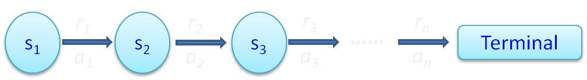

# Project setup
1. Scrum development
* Slack
* Meistertask
2. Git source controll
* Github
* No branches
3. Python programming
import pygame
import pgu
import tensorflow
So far it has worked pretty great.
# Agents
0. Random
1. Neuro evolution
2. Decision tree (symbolic AI)
3. Reinforcement learning
# Random
> With luck on your side, you can do without brains.
>
> Giordano Bruno
# Neural network

# Applying evolution
0. Create an initial population.
1. Create offspring
2. Competition
3. Selection
4. Repetition
# FS-Neat

To create the initial population.
# Add mutation

# Link mutation

# Merge mutation

# Competition
Play the game, give score to performance.
## Possible scoring schemes
1. win/lose
2. Progress on board
3. Relative progress
## Find a good game number
Use an average of multpile games
# Selection
kill off some of the parents/offspring.
## Posibilities
1. Truncate
2. Tournement
3. Proportional
Sarsa
Shares similiartities with Temporal Difference learning.
$$Q(s_i, a_i) \gets (1-\alpha) \cdot Q(s_i,a_i) + \alpha
[r_i + \lambda Q( s_{i+1},a_{i+1})]$$
- Q value is used for the propencity of an action
- $\alpha$ learning rate
- $\lambda$ discount factor
- $s_i$ the state at time $i$
- $a_i$ the action at time $i$
- $r_i$ the reward from an action at time $i$

# The algorithm
1. Take random $Q(s,a)$ values
2. For every round:
1. Choose an action $a$ using $Q(s)$
2. $(s', r) \gets Execute(a)$
3. Choose $a'$ using $Q(s')$
4. update $Q(s,a)$
5. $s\gets s'$
6. $a \gets a'$